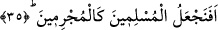

kutsal katının civârında” şeklindedir. Şu hâlde buradaki “katındalık”, cihetten ve yönden
münezzeh olan makam ve mertebe itibariyle katındalıktır; yoksa mekân açısından
değildir. Nitekim aynı durum şu âyet-i kerîmede de söz konusudur. “Takvâ sâhipleri
cennetlerde ve ırmakların kenarlarında güçlü ve Allah’ın huzûrunda hak
meclisindedirler.” (el-Kamer, 54/54,55) Şu hâlde sonuç olarak diyebiliriz ki Allah’a
yakın olan kulların O’na bu yakınlıkları mânevî bir yakınlıktır. Yoksa burada mekânî bir
yakınlık söz konusu değildir.
Râğıb İsfahânî der ki: “Inde” kelimesi yakınlık ifâde edilmek için kullanılır. Bu
kelime bazen mekânî, bazen de itikâdi yakınlıklarda kullanılır. Meselâ kişi “ındî keza”
yâni “benim yanımda şu kadar var” dediğinde böyle bir yakınlık söz konusudur. Bazen
de aynı kelime mertebe ve mânâ itibariyle yakınlığı ifâde eder. Şu âyet-i kerîme buna
örnektir: “Allah yolunda öldürülenleri sakın ölü sanmayın. Bilakis onlar diridirler,
Allah’ın lutuf ve kereminden kendilerine verdikleri ile sevinçli bir hâlde rableri
yanında rızıklara mazhar olmaktadırlar.” (Âl-i, İmran, 3/169-170) Nitekim yine aynı
itibarla bir kısım meleklere, “el-melâiketü’l-mukarrabûn” ismi verilmiştir.
“Cennâtu’n-naîm”, dünya nimetlerinde olduğu gibi nimetin elden çıkma korkusunun
yaşanmadığı, hayatı insana zehir eden olumsuzluklardan uzak ve içinde sâdece
nimetlenme olan cennetler demektir. “İçinde sâdece nimetlenme olan” şeklinde nimetin
cennete izâfe edilmesi izâfet-i lamiyye’den anlaşılmaktadır. Çünkü böylesi bir izâfet,
muzâfun ileyhin sâdece muzâfa âidiyetini ifâde etmektedir.
35. Öyle ya, (Allah’a) teslimiyet gösterenleri, (o) günahkârlar gibi tutar mıyız
hiç?
Kureyş’in ileri gelenleri, kendilerinin dünyadaki nasiplerinin bolluğuna ve
müslümanların paylarının azlığına bakarak Allah’ın âhirette müslümanlara vaad
ettiklerini duyduklarında şöyle dediler: Muhammed’in ve onunla birlikte bulunanların
iddiâ ettikleri gibi eğer biz gerçekten yeniden dirilecek isek bizim durumumuzla onların
durumu aynen bu dünyadaki durumlarımızdan farklı olmaz. Eğer farklı olursa yine de
onlar bizden daha fazla nimete eremezler ve bizden üstün olamazlar. Onların olsa olsa
gidebilecekleri en ileri nokta durumlarının bize eşitliği noktasıdır. İşte Allah, kâfirlerin
bu sözünü bu âyet-i kerîme ile reddetmiş olmaktadır.
Âyetin başındaki “hemze” hemze-i inkâriye’dir. “Fâ” harfi ise ifâdenin gelişinin
gerektirmiş olduğu mukadder ve önceden geçen bir cümleye bu cümleyi atfetmektedir.
Biz o mukadder cümleyi de takdir ederek ifâdeye şöyle bir mânâ verebiliriz: Biz,
hüküm vermede haksızlık yapıp da kurtuluşa erme ve derecelere ulaşma açısından
müminleri kâfirler gibi tutarmıyız hiç?